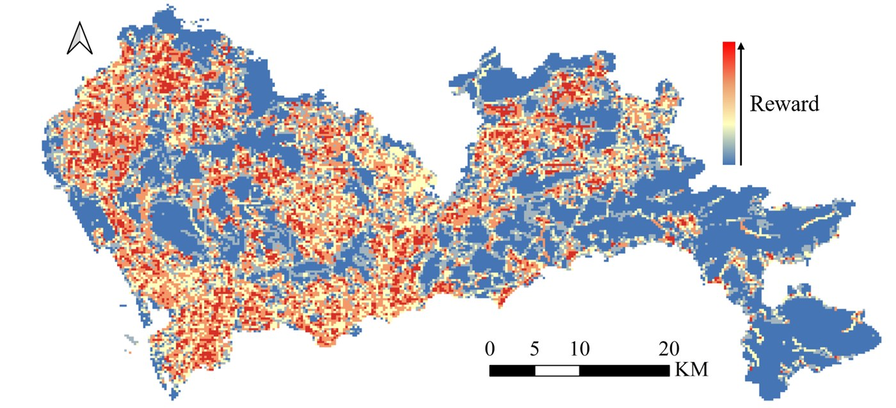
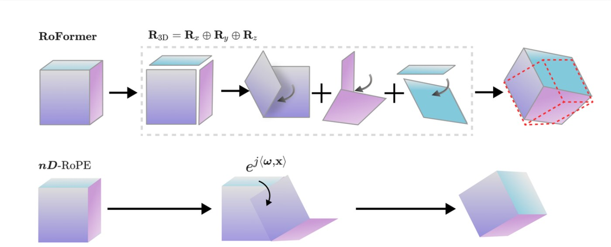
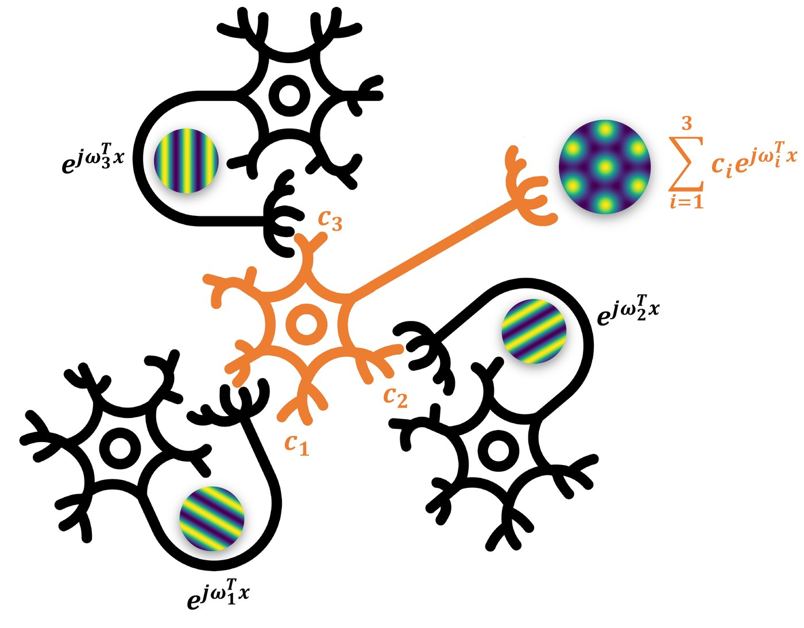
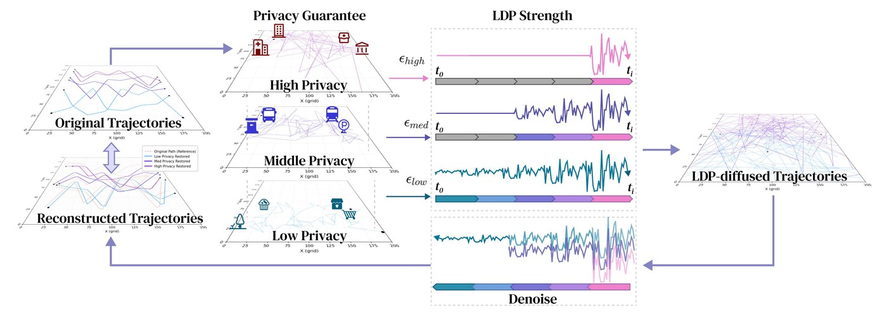
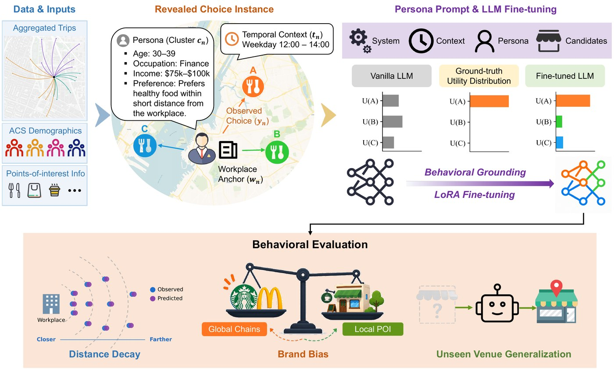
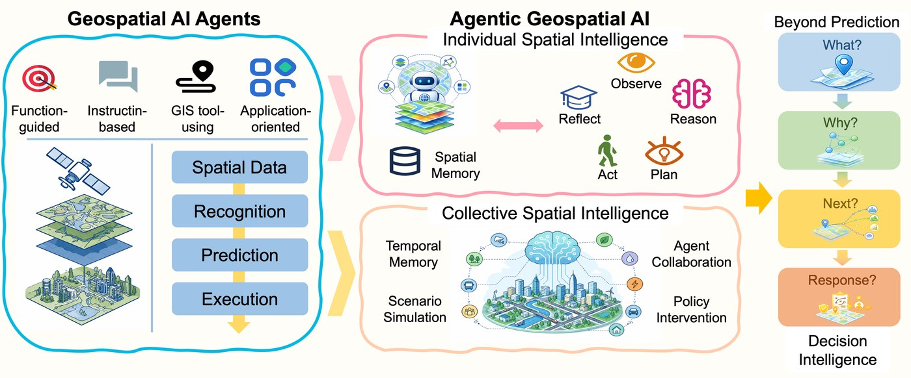
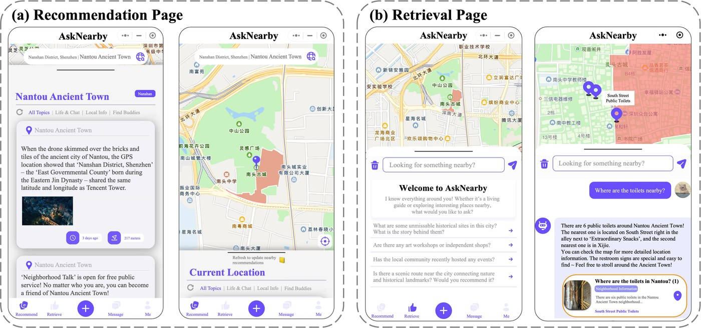
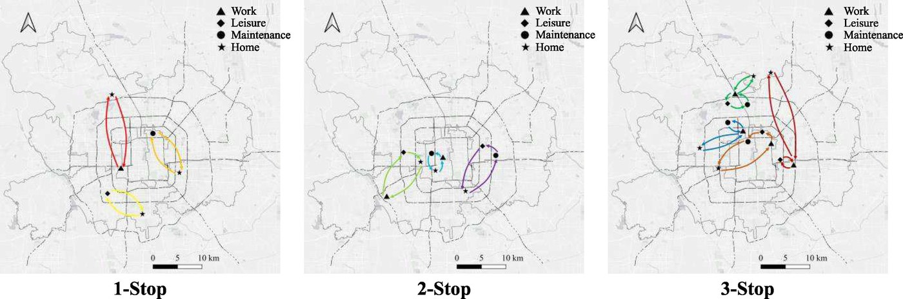
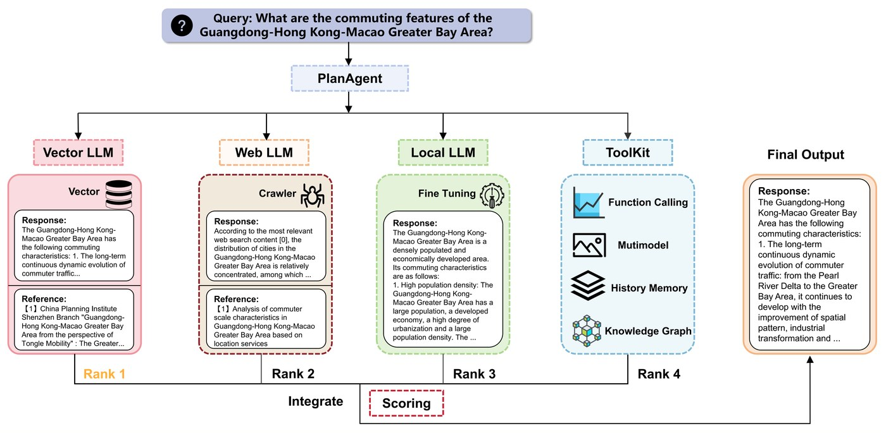

Spatial Decision-Making & Brain-Inspired Spatial Intelligence
Modeling cognitive maps, route choice, revealed preferences, and spatial decision structures through inverse reinforcement learning and topology-aware AI.
Ph.D. Researcher · Human-Centered AI for Complex Systems
I study how humans and intelligent agents perceive, represent, reason, and decide in spatial and urban environments.
Research Identity
My work connects geospatial machine learning, behavioral decision modeling, causal inference, and computational social science to build interpretable models of how people and artificial agents perceive, choose, and coordinate in space.
Research
Modeling cognitive maps, route choice, revealed preferences, and spatial decision structures through inverse reinforcement learning and topology-aware AI.
Designing agent-based and AI-native frameworks for mobility, economic behavior, dependency networks, and emergent coordination in cities.
Developing general spatial representations for AI systems, including n-dimensional positional encoding and geometry-aware embeddings across coordinates, images, videos, point clouds, and trajectories.
Building spatial world models for intelligent systems, enabling large language models to understand geographic knowledge, reason over spatial relations, and act within structured environments.
Education
Ph.D. in Human-Centered Technology, Innovation & Design
2025-present
M.Sc. in Geography, Smart Cities and Big Data
2022-2025
B.Eng. in Remote Sensing Science and Technology
2018-2022Publications
* Equal contribution · † Corresponding author

IEEE Transactions on Intelligent Transportation Systems · 2024
Boyang Li and Wenjia Zhang.
Paper
ICML 2026
Boyang Li, Yulin Wu, Sizhe Xu, Nuoxian Huang, Zhonghang Yuan, Shangyi Guo, Shu Yang, and Takahiro Yabe.
Paper
arXiv · 2024 · precursor to nD-RoPE
Boyang Li, Yulin Wu, Nuoxian Huang, and Wenjia Zhang.
Paper
SIGSPATIAL 2026 · Under Review
Boyang Li, Shangyi Guo, Kota Tsubouchi, Toru Shimizu, Zhonghang Yuan, Joseph Y. J. Chow, and Takahiro Yabe.

SIGSPATIAL 2026 · Under Review
Boyang Li*, Sizhe Xu*, Donghak Lee, Shangyi Guo, Zhaonan Wang, and Takahiro Yabe.

ACM SIGSPATIAL · Vision Track
Sizhe Xu*, Boyang Li*, Jing Tang*, Zhe Wang*, Takahiro Yabe*, and Zhaonan Wang*.

ACM SIGSPATIAL GeoAI Workshop · 2025
Luyao Niu, Zhicheng Deng, Boyang Li†, Nuoxian Huang, Ruiqi Liu, and Wenjia Zhang.
Paper
Travel Behaviour and Society · 2024
Wenjia Zhang, Daming Lu, Hongjin Liu, and Boyang Li.
Paper
arXiv · 2024
He Zhu, Wenjia Zhang, Nuoxian Huang, Boyang Li, et al.
PaperRecognition
NYU Tandon School of Engineering Ph.D. Fellowship, fully funded
Yi-Innovator College Student Social Innovation Grant
Baidu Wenxin Cup Research Scholarship
Peking University Long Yuan Chang Ze Scholarship
Peking University Shenzhen Graduate School Tie Han Scholarship
Wuhan University First-Class Scholarship
Wuhan University Hong Tu Chuang Zhan Scholarship
Contact